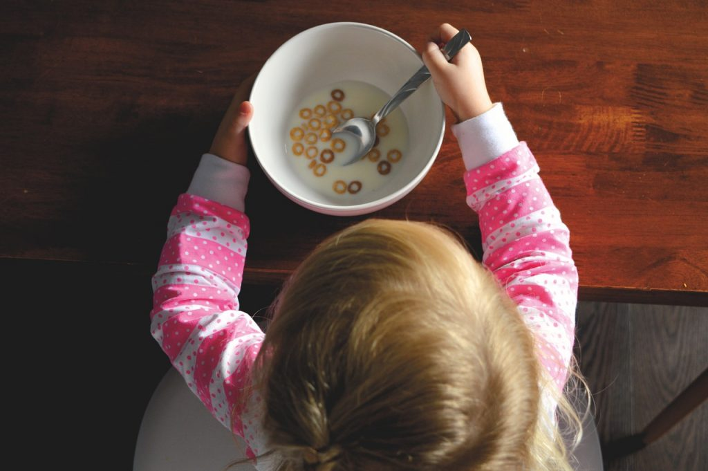
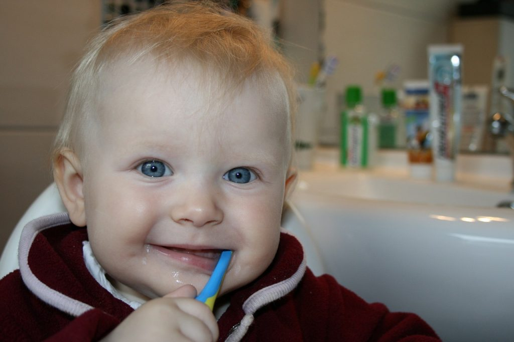
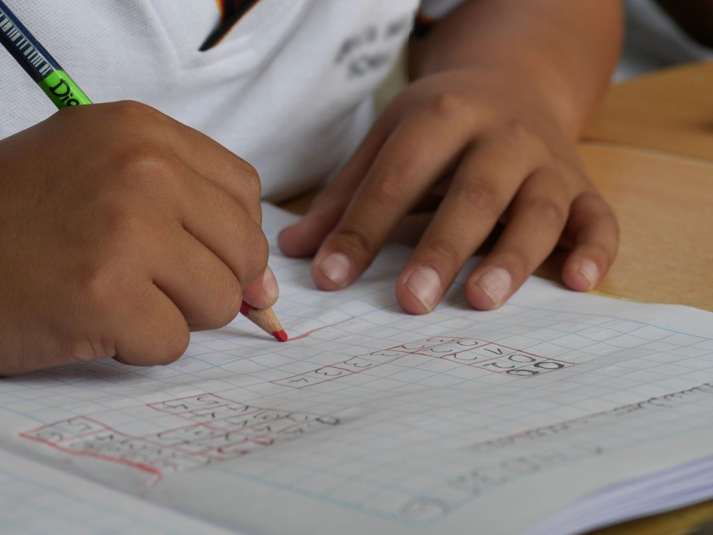

၁။ ကလေးအသက် ၈ လ လောက်ဆို ပိုက်နဲ့ စုပ်ပြီး သောက်တတ်အောင် သင်ပေးလို့ ရပါပြီ. အသက် ၁ နှစ်ခွဲ လောက်မှာ ခွက်ကနေ သောက်တတ် အောင် သင်ပေးပါ။
၂။ ကလေး အသက် ၁ နှစ်ခွဲလောက်ဆို ဇွန်းနဲ့ ကိုယ့်ဟာကိုယ် စားတတ်အောင် သင်ပေးပါ။

၄။ လက်ကို သေချာဆေးတတ်အောင် အသက် ၁ နှစ်လောက်က စပြီး သင်ပေးပါ။ အသက် ၅ နှစ် ကျောင်းစနေချိန်ဆို လက်ကို ဆပ်ပြာနဲ့ သေချာ စင်ကျယ်အောင် ဆေးတတ်အောင် သင်ပေးဖို့ လိုပါတယ်။
၅။ အသက် ၁ နှစ်ခွဲနဲ့ ၂ နှစ် ကြားလောက်ကစလို့ သူတို့ကစားလို့ ဖိတ်စင်ကျတောတွေကို သူတို့ဖာသူတို့ အဝတ်နဲ့ သုတ်ပြီး သန့်ရှင်းတတ်အောင် စသင်ပေးပါ။
၆။ အသက် ၁ နှစ်ခွဲလောက်က စလို့ သွားတိုက်တတ်အောင် စသင်ပေးပါ။ ကျောင်းစနေတဲ့ အချိန်မှာ ကိုယ့်သွားကို ကိုယ်ကိုယ်တိုင် စင်ကျယ်အောင် တိုက်တတ်သင့်ပါပြီ။

၈။ အသက် ၂ နှစ်လောက်ကစလို့ ဖိနပ်ချွတ်တတ်အောင်၊ ပြီးတော့ ချွတ်ပြီးတဲ့ ဖိနပ်ကို ဖိနပ်စင်မှာ ထားတတ်အောင် လေ့ကျင့်သင်ကြားပေးပါ။ အသက် ၃ နှစ်လောက်မှာ ကိုယ့်ဖိနပ် ကိုယ့်ဟာကိုယ် စီးတတ်အောင် လေ့ကျင့်ပေးပါ။
၉။ အသက် ၂ နှစ်ကစလို့ ကလေးကို ကိုယ့်ဆံပင် ကိုယ်ဖြီးတတ်အောင် သင်ပေးပါ။
၁၀။ အသက် ၂ နှစ်မှာ မိဘအကူအညီနဲ့ အင်္ကျီ ဝတ်တတ်အောင် စသင်ပေးပါ။ ကျောင်းစနေတဲ့ အသက် ၅ နှစ်လောက်ဆို မိဘအကူအညီ မပါပဲ အင်္ကျီဝတ်တတ် သင့်ပါပြီ။
၁၁။ အသက် ၃ နှစ်ကစလို့ မိုးကာ၊ အနွေးထည် စတဲ့ အင်္ကျီတွေကို အင်္ကျီချိတ်မှာ ချိတ်တတ်အောင် စသင်ပေးပါ။ အစတော့ မိဘက ချိတ်မှာ အင်္ကျီကို ချိတ်ပေးဖို့ လိုပါလိမ့်မယ်။ နောက်ပိုင်း ကလေးက ကိုယ့်ဟာကို လုပ်တတ်သွားပါလိမ့်မယ်။
၁၂။ အသက် ၃ နှစ်က စလို့ ကလေးကို ခဲတံနဲ့ စာရေးတတ်အောင် စပြီး လေ့ကျင့်ပေးပါ။ အစမှာ ရောင်စုံခဲတံတွေနဲ့ ပုံလေးတွေကို အရောင်ချယ်တတ်အောင် စပြီး လေ့ကျင့်ပေးပါ။ ကလေးကျောင်းစနေတဲ့ အချိန်မှာ ခဲတံကို ကောင်းကောင်းကိုင်နိုင် အောင် အသက် ၃ နှစ်လောက်ကစလို့ သင်ပေးပါ။ စာရေးတတ်စရာ မလိုသေးပါဘူး။ ဒါပေမယ့် ခဲတံကို ကောင်းကောင်းကိုင်ပြီး ပုံဆွဲတာ ဆေးရောင်ခြယ်တာတွေ ကောင်းကောင်း လုပ်တတ်အောင် လေ့ကျင့်ပေးပါ။

၁၄။ လက်ကိုင်ပဝါလို ခေါက်ရ လွယ်ကူတဲ့ အဝတ်တွေကို ကိုယ်တိုင်ခေါက်တတ်အောင် အသက် ၃ နှစ်လောက်ကစလို့ သင်ပေးပါ။
၁၅။ အသက် ၂ နှစ်ခွဲ လောက်ကစပြီး သူတို့စားပြီးတဲ့ ပန်းကန်ဟောင်းတွေကို ပန်းကန်ဆေးဇလုံထဲ ထည့်တတ်တဲ့ အလေ့အကျင့်ရအောင် သင်ပေးပါ။ အသက် ၄ နှစ်လောက်ဆို ထမင်းကျန်၊ ဟင်းကျန်တွေကို အမှိုက်ပုံးထဲ သွန်ပြီးမှ ပန်းကန်ကို ပန်းကန်ဆေး ဇလုံထဲ ထည့်တဲ့အကျင့်ရအောင် သင်ပေးပါ။
၁၆။ အသက် ၃ နှစ်လောက်မှာ အင်္ကျီဇစ် တပ်တာ၊ ဖြုတ်တာနဲ့ အင်္ကျီကြယ်သီး တတ်တာ ဖြုတ်တာ ကိုယ်တိုင်လုပ်တတ်အောင် သင်ပေးပါ။